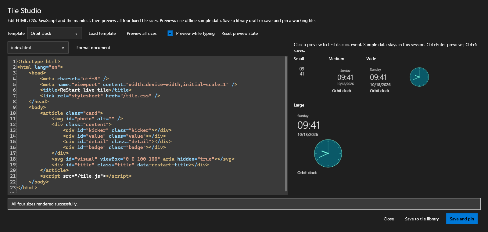

Small tiles. Plenty of possibilities.
Build something
for your Start.
Write a live tile. Connect a useful bit of data. Improve a detail that makes someone’s desktop feel better. ReStart is open source, and there is room to make it your own.
HTML, CSS and JavaScript
Four files. Your own live tile.
A version 2 web package uses ordinary browser code inside one of four fixed footprints. Draw with HTML, SVG or Canvas; use responsive CSS, custom typography and transparent backgrounds. Begin with a bundled example, or try this small clock. HTML tiles require Microsoft WebView2 Runtime.
{
"version": 2,
"renderer": "web",
"title": "My clock",
"refreshSeconds": 1,
"settings": {}
}<!doctype html>
<html>
<head><link rel="stylesheet" href="/tile.css"></head>
<body>
<main><time id="value"></time>
<span data-restart-title id="name"></span>
</main>
<script src="/tile.js"></script>
</body>
</html>html, body { margin: 0; width: 100%; height: 100%; }
body { background: #123448; color: white; font: 16px "Segoe UI", sans-serif; }
main { height: 100%; display: grid; place-content: center; gap: 8px; }
time { font-size: 28px; white-space: nowrap; }
html[data-size="small"] time { font-size: 13px; }
html[data-size="small"] [data-restart-title] { display: none; }
html[data-show-title="false"] [data-restart-title] { display: none; }function render(ctx) {
document.getElementById("value").textContent =
new Date(ctx.now).toLocaleTimeString(ctx.locale, {
hour: "2-digit", minute: "2-digit", hourCycle: "h23"
});
document.getElementById("name").textContent = ctx.title;
}Keep these four files together and import manifest.json, or build the package in Tile Studio. For a watched gallery, place package folders in %LOCALAPPDATA%\ReStart\TileLibrary. ReStart installs a separate editable copy when you pin a package.
Useful input, without the plumbing
A snapshot of the moment.
The host provides JSON context for each update. Host-managed state and queued input survive bounded browser recovery. Offscreen tiles pause by default; browser globals are recreated after a crash, so persist meaningful state through the tile API. Failed input may be replayed: use its timestamp to deduplicate external side effects. Respond to the current tile size, local PC time, a click, or a new data snapshot. Use the previous successful state for a local counter, chart history or timer.
| Context | What it gives you |
|---|---|
ctx.size / ctx.bounds | Small, medium, wide or large, with actual width, height and scale. Choose a layout that fits. |
ctx.time | PC wall-clock time, UTC offset and monotonic uptime. |
ctx.language | The selected UI language; ctx.locale helps format values. |
ctx.event | A local click event, when one is pending. |
ctx.state | Your last successful JSON state for this session. |
ctx.system | Aggregate CPU, memory, network, battery and storage metrics when requested. |
ctx.data | Cached values from explicitly configured JSON or RSS/Atom inputs. |
Web tiles may use an asynchronous render(ctx), an optional present(result, ctx), or ReStart.onUpdate(fn). Store bounded JSON with ReStart.setState(value). The host also supplies theme, reduced-motion and optional-name preferences. Legacy native version 1 packages remain supported.
Bring in something useful
Your data. A small window into it.
Declare a named input in the manifest. The user chooses its connection locally, enables the intended inputs and selects Save and approve for that placed tile. The host handles fetching, caching and retry backoff; your tile reads the latest snapshot. Changed access requests require fresh approval, and disabling a connection revokes access and clears host-cached data.
{
"version": 2,
"renderer": "web",
"title": "Service status",
"capabilities": ["data.sources"],
"dataSources": {
"service": { "format": "json", "refreshSeconds": 60 }
}
}Keep connections local. URLs, selected files and optional credential headers belong in ReStart’s connection settings, not in a shared tile package. Approvals are bound to the tile, installed package, requested inputs and exact local connection. Selected response data reaches the script; connection credentials and approval records do not.
Create without leaving Start
An editor. Four previews.
Tile Studio includes theme-aware syntax highlighting for JavaScript, HTML, CSS and JSON. Tab and Shift+Tab indent selected lines; Format document or Ctrl+Shift+F runs the bundled offline Prettier formatter. Formatting never executes the source and is one undoable edit.

Ctrl+Enter previews and Ctrl+S saves. Test a local click, change synthetic sample input and check every size before pinning. Automatic preview is optional. The preview does not read personal connections, chosen photos or credentials.
Start with a real example
Nineteen editable packages cover clocks, PC metrics, photos, weather, feeds and app data. Weather scene demonstrates CSS artwork; System dashboard uses multiple SVG gauges; News board has an independently scrollable story; Canvas garden animates with Canvas. The Orbit clock draws its hands from PC time between host updates.
Place and test your tile
New tiles use an unnamed group by default. Existing layouts are preserved. Hold Shift while dragging to rearrange without folder actions, or Alt for independent placement in empty space. Free placement can also be enabled in Start behavior settings.
Choose the execution boundary
Web tiles use the Microsoft WebView2 Runtime. Local package assets are served from a private origin. Direct networking starts disabled and requires both a declared capability and the user's per-tile grant. Prefer configured host data sources for cached responses and private credentials. There is no Node.js, shell-launch or general filesystem bridge. Import code you trust.
Browser API and execution detailsRun the source
A Windows app, in the open.
ReStart uses C#, WPF and the stable .NET SDK selected by global.json. Build on Windows. The repository keeps the app, core models and isolated JavaScript worker in separate projects.
dotnet restore ReStart.slnx --locked-mode
dotnet build ReStart.slnx -c Release --no-restore
dotnet test ReStart.slnx -c Release --no-buildThe commands above build and test a developer checkout. Portable distribution packages have their own script, runtime bundles and notice files.
Measure the environment
Check the platform you run on.
The native fixture checks connected monitor working areas, DPI agreement and accessibility providers in eight languages and both themes. It uses fictional apps and isolated settings; the default hidden run leaves the foreground unchanged, while an explicit visible mode checks the launcher window. Recorded runs cover two displays at 100%/125%/150%, including mixed portrait/landscape. Basic Narrator announcements were inspected through Speech recap. Physical checks in an isolated development fixture cover taps, long-press menus, tile/group dragging, folder creation and scrolling; reconnects, remaining touch scenarios and full screen-reader interaction remain device checks.
Leave it a little better
There is more than one way to help.
Report a reproducible bug, improve an AI-assisted translation, share a useful tile, or propose a focused change. A clear description of the problem is a good place to start.
Keep the ideas coming
Support independent development.
Code, feedback and a little encouragement all help.